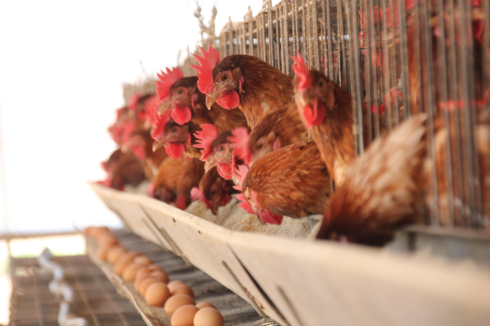

Project: Sustainable Egg Production Initiative
Overview:
At FreshEggs Farm, we are committed to promoting sustainable agriculture practices and ensuring the welfare of our hens while providing high-quality, farm-fresh eggs to our customers. Our Sustainable Egg Production Initiative exemplifies our dedication to environmental stewardship, animal welfare, and community engagement.
Objectives:
- Environmental Sustainability: Reduce our environmental footprint and promote eco-friendly farming practices.
- Animal Welfare: Ensure the health, well-being, and humane treatment of our hens.
- Community Engagement: Educate and engage our community on the importance of sustainable agriculture and responsible egg consumption.
Key Features:
- Free-Range Hen Housing: Transitioned our hen housing to spacious, free-range environments that allow our hens to roam freely, exhibit natural behaviors, and access outdoor areas.
- Organic Feed: Sourced organic, non-GMO feed for our hens, free from pesticides, antibiotics, and synthetic additives, to ensure their health and the quality of our eggs.
- Solar-Powered Facilities: Implemented solar energy systems to power our farm operations, reducing our reliance on non-renewable energy sources and minimizing our carbon footprint.
- Comprehensive Waste Management: Implemented composting and recycling programs to reduce waste and minimize environmental impact.
- Educational Outreach: Hosted farm tours, workshops, and community events to educate the public about sustainable egg production, hen care, and environmental conservation.
Results:
- Improved Egg Quality: Our sustainable farming practices have resulted in eggs of superior quality, taste, and nutritional value.
- Positive Community Impact: Increased awareness and appreciation for sustainable agriculture within our local community.
- Recognition: Received accolades and recognition from environmental organizations and community groups for our commitment to sustainability and responsible farming practices.
Future Plans:
Continuously strive for innovation and improvement in our sustainable farming practices, explore new technologies and initiatives, and expand our community outreach efforts to promote sustainable living and responsible egg consumption.
.jpg)
.jpg)